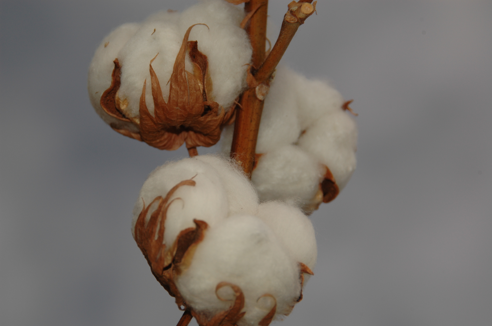
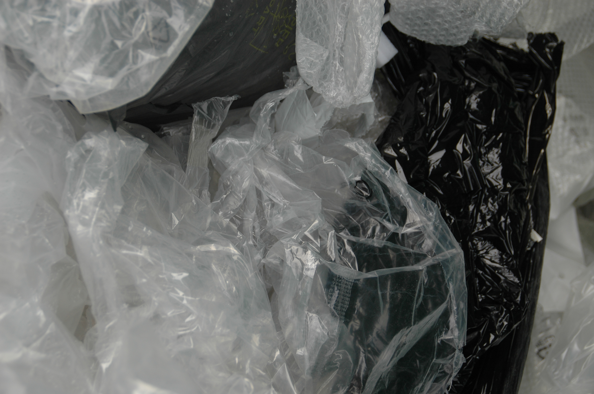

BEWUST GEMAAKTE PRODUCTEN
ORGANISCH KATOEN
Hun katoenen producten zijn gemaakt van 100% Biologisch Katoen, met GOTS- en Fairtrade-certificaten. Dit materiaal wordt geteeld met behulp van landbouwmethoden die de impact op het milieu minimaliseren. Het biologische katoen waarmee de kleding gemaakt worden, komt uit Bangladesh en het zeefdrukproces vindt plaats in Spanje.
RECYCLED POLYESTER
De zwemkleding is gemaakt van 100% gerecycled polyester. Dit materiaal helpt het waterverbruik verminderen met 20% en het energieverbruik met 50%, de CO2-uitstoot met 60% te verminderen. Gerecycled polyester kan opnieuw worden gebruikt en is om die reden een hoogwaardig materiaal in de circulaire economie.
